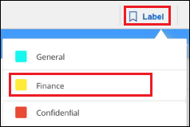

要求變更文件
要求變更文件 編輯此頁面
編輯此頁面 瞭解如何作出貢獻
瞭解如何作出貢獻組織您的私有資料
Cloud Data Sense提供多種方法、讓您管理及組織私有資料。如此一來、您就能更輕鬆地查看最重要的資料。
-
如果您已訂閱 "Azure資訊保護（AIP）" 若要分類及保護檔案、您可以使用Cloud Data Sense來管理這些AIP標籤。
-
您可以將標記新增至您要標記為組織或某種後續追蹤的檔案。
-
您可以將Cloud Manager使用者指派給特定檔案或多個檔案、讓該人員負責管理檔案。
-
使用「原則」功能、您可以建立自己的自訂搜尋查詢、只要按一下按鈕、就能輕鬆查看結果。
-
當某些重要原則傳回結果時、您可以傳送電子郵件警示給Cloud Manager使用者。

|
本節所述的功能僅在您選擇對資料來源執行完整分類掃描時可用。只有對應掃描的資料來源不會顯示檔案層級的詳細資料。 |
我應該使用標記或標籤嗎？
以下是資料感應標記與Azure資訊保護標記的比較。
| 標記 | 標籤 |
|---|---|
檔案標記是Data Sense的整合部分。 |
您必須訂閱Azure資訊保護（AIP）。 |
標記只保留在Data Sense資料庫中、不會寫入檔案。它不會變更檔案、或是存取或修改檔案的時間。 |
標籤是檔案的一部分、當標籤變更時、檔案會變更。這項變更也會變更檔案的存取和修改時間。 |
您可以在單一檔案上有多個標記。 |
您可以在單一檔案上有一個標籤。 |
此標記可用於內部Data Sense動作、例如複製、移動、刪除、執行原則、 等等 |
其他可讀取檔案的系統也會看到標籤、可用於其他自動化作業。 |
只會使用單一API呼叫來查看檔案是否有標記。 |
使用AIP標籤分類資料
您可以在Cloud Data Sense正在掃描的檔案中管理AIP標籤（若已訂閱） "Azure資訊保護（AIP）"。AIP可讓您將標籤套用至內容、以分類及保護文件與檔案。Data Sense可讓您檢視已指派給檔案的標籤、新增標籤至檔案、以及在標籤已經存在時變更標籤。
Cloud Data Sense支援下列檔案類型中的AIP標籤：.DOC、.DOCX、.PDF、.PPTX、.XLS、 XLSX：
|
|
|
將AIP標籤整合到工作區中
在您管理AIP標籤之前、您必須先登入現有的Azure帳戶、將AIP標籤功能整合至Cloud Data Sense。一旦啟用、您就能在檔案中管理所有人的AIP標籤 "工作環境與資料來源" 在Cloud Manager工作區中。
-
您必須擁有帳戶和Azure資訊保護授權。
-
您必須擁有Azure帳戶的登入認證資料。
-
如果您打算變更Amazon S3儲存區中檔案的標籤、請確保IAM角色中包含「s 3：PuttObject"」權限。請參閱 "設定IAM角色"。
-
在「Cloud Data Sense Configuration」（雲端資料感測組態）頁面中、按一下「*整合AIP Labels *」。

-
在「整合AIP標籤」對話方塊中、按一下*登入Azure *。
-
在顯示的Microsoft頁面中、選取帳戶並輸入所需的認證資料。
-
返回Cloud Data Sense索引標籤、您會看到訊息「AIP Labels were sided Successfully with the account <account_name>（_AIP標籤已成功與帳戶整合）」。
-
按一下「關閉」、您會在頁面頂端看到「_AIP Labels Integrated」（_AIP標籤整合）文字。

您可以從「調查」頁面的「結果」窗格中檢視並指派AIP標籤。您也可以使用原則將AIP標籤指派給檔案。
檢視檔案中的AIP標籤
您可以檢視指派給檔案的目前AIP標籤。
在「資料調查結果」窗格中、按一下  以展開檔案中繼資料詳細資料。
以展開檔案中繼資料詳細資料。

手動指派AIP標籤
您可以使用Cloud Data Sense從檔案中新增、變更及移除AIP標籤。
請遵循下列步驟、將AIP標籤指派給單一檔案。
-
在「資料調查結果」窗格中、按一下
 以展開檔案中繼資料詳細資料。
以展開檔案中繼資料詳細資料。
-
按一下*指派標籤至此檔案*、然後選取標籤。
標籤會出現在檔案中繼資料中。
若要將AIP標籤指派給多個檔案：
-
在「資料調查結果」窗格中、選取您要標示的檔案。

-
若要選取個別檔案、請核取每個檔案的方塊（
 ）。
）。 -
若要選取目前頁面上的所有檔案、請核取標題列中的方塊（
 ）。
）。
-
-
在按鈕列中、按一下* Label *、然後選取AIP標籤：

AIP標籤會新增至所有選取檔案的中繼資料。
使用原則自動指派AIP標籤
您可以將AIP標籤指派給符合原則條件的所有檔案。您可以在建立原則時指定AIP標籤、也可以在編輯任何原則時新增標籤。
隨著Cloud Data Sense掃描檔案、檔案中會持續新增或更新標籤。
根據標籤是否已套用至檔案、以及標籤的分類層級、變更標籤時會採取下列動作：
| 如果檔案… | 然後… |
|---|---|
沒有標籤 |
隨即新增標籤 |
現有標籤的分類等級較低 |
新增較高層級的標籤 |
現有標籤的分類等級較高 |
保留較高層級的標籤 |
手動指派標籤、並由原則指派 |
新增較高層級的標籤 |
由兩個原則指派兩個不同的標籤 |
新增較高層級的標籤 |
請遵循下列步驟、將AIP標籤新增至現有原則。
-
在「原則清單」頁面中、針對您要新增（或變更）AIP標籤的原則、按一下「編輯」。

-
在「Edit Policy（編輯原則）」頁面中、勾選此方塊以啟用符合「Policy（原則）」參數之檔案的自動標籤、然後選取標籤（例如* General（一般）*）。

-
按一下「儲存原則」、標籤會出現在「原則說明」中。
|
|
如果原則已設定標籤、但該標籤已從AIP移除、則標籤名稱會關閉、而且不會再指派標籤。 |
移除AIP整合
如果您不再想要管理檔案中的AIP標籤、可以從Cloud Data Sense介面移除AIP帳戶。
請注意、您使用Data Sense新增的標籤不會有任何變更。檔案中的標籤會維持目前的狀態。
-
在「_Configuration」頁面中、按一下「整合AIP標籤」>「移除整合」。

-
按一下確認對話方塊中的*移除整合*。
套用標記來管理掃描的檔案
您可以新增標記至您要標記某種後續追蹤類型的檔案。例如、您可能找到一些重複的檔案、想要刪除其中一個、但您需要檢查一下該刪除哪些檔案。您可以在檔案中新增「Check to DELETE」標記、以便知道此檔案需要進行一些研究、以及未來的某種行動。
Data Sense可讓您檢視指派給檔案的標記、新增或移除檔案的標記、以及變更名稱或刪除現有標記。
請注意、標記不會以AIP標籤是檔案中繼資料一部分的方式新增至檔案。Cloud Manager使用者使用Cloud Data Sense時會看到這個標記、因此您可以查看是否需要刪除檔案、或是檢查某種類型的後續追蹤。

|
指派給Cloud Data感應檔案的標記與您可以新增至資源（例如磁碟區或虛擬機器執行個體）的標記無關。資料感應標記會套用至檔案層級。 |
檢視已套用特定標記的檔案
您可以檢視已指派特定標記的所有檔案。
-
按一下Cloud Data Sense中的* Investigation *索引標籤。
-
在「資料調查」頁面中、按一下「篩選」窗格中的*標記*、然後選取所需的標記。
「調查結果」窗格會顯示已指派這些標記的所有檔案。
指派標記給檔案
您可以將標記新增至單一檔案或一組檔案。
若要新增標記至單一檔案：
-
在「資料調查結果」窗格中、按一下
以展開檔案中繼資料詳細資料。 -
按一下「標記」欄位、即會顯示目前指派的標記。
-
新增標記：
-
若要指派現有標記、請按一下「新標記…」欄位、然後開始輸入標記名稱。當您要尋找的標記出現時、請選取該標記、然後按* Enter *。
-
若要建立新標記並將其指派給檔案、請按一下「新標記…」欄位、輸入新標記的名稱、然後按* Enter *。

標記會出現在檔案中繼資料中。
-
若要新增標記至多個檔案：
-
在「資料調查結果」窗格中、選取您要標記的檔案。
-
若要選取個別檔案、請核取每個檔案的方塊（
）。 -
若要選取目前頁面上的所有檔案、請核取標題列中的方塊（
）。
-
-
在按鈕列中、按一下* Tag*（標記）、就會顯示目前指派的標記。
-
新增標記：
-
若要指派現有標記、請按一下「新標記…」欄位、然後開始輸入標記名稱。當您要尋找的標記出現時、請選取該標記、然後按* Enter *。
-
若要建立新標記並將其指派給檔案、請按一下「新標記…」欄位、輸入新標記的名稱、然後按* Enter *。

-
-
核准在確認對話方塊中新增標記、並將標記新增至所有選取檔案的中繼資料。
刪除檔案中的標記
如果不再需要使用標記、您可以刪除標記。
只要按一下* x*即可取得現有標記。

如果您選取多個檔案、則標記會從所有檔案中移除。
指派使用者管理特定檔案
您可以將Cloud Manager使用者指派給特定檔案或多個檔案、以便該人員負責該檔案所需的任何後續行動。此功能通常與功能搭配使用、以將自訂狀態標記新增至檔案。
例如、您的檔案可能包含某些個人資料、允許太多使用者讀寫存取（開放權限）。您可以指派「狀態」標記「變更權限」、並將此檔案指派給使用者「Joan Smith」、讓他們決定如何修正問題。當他們修正問題時、他們可以將「Status（狀態）」標記變更為「completed（已完成）」。
請注意、使用者名稱並未新增至檔案作為中繼資料的一部分、Cloud Manager使用者使用Cloud Data Sense時就會看到這個名稱。
「調查」頁面中的新篩選器可讓您在「指派給」欄位中輕鬆檢視擁有相同人員的所有檔案。
若要將使用者指派給單一檔案：
-
在「資料調查結果」窗格中、按一下
以展開檔案中繼資料詳細資料。 -
按一下*指派對象*欄位、然後選取使用者名稱。

使用者名稱會出現在檔案中繼資料中。
若要將使用者指派給多個檔案：
-
在「資料調查結果」窗格中、選取您要指派給使用者的檔案。
-
若要選取個別檔案、請核取每個檔案的方塊（
）。 -
若要選取目前頁面上的所有檔案、請核取標題列中的方塊（
）。
-
-
在按鈕列中、按一下*指派給*、然後選取使用者名稱：

使用者會新增至所有選取檔案的中繼資料。
使用原則來控制資料
原則就像是自訂篩選器的最愛清單、可在「調查」頁面中針對一般要求的法規遵循查詢提供搜尋結果。Cloud Data Sense根據一般客戶要求提供一組預先定義的原則。您可以建立自訂原則、針對組織專屬的搜尋結果提供結果。
原則提供下列功能：
-
預先定義的原則 根據使用者要求從NetApp取得
-
能夠建立您自己的自訂原則
-
只要按一下、就能啟動「調查」頁面、並取得原則的結果
-
當特定重要原則傳回結果時、請傳送電子郵件警示給Cloud Manager使用者、以便取得通知來保護資料
-
自動將AIP（Azure資訊保護）標籤指派給符合原則中所定義條件的所有檔案
-
當某些原則傳回結果時、自動刪除檔案（每天一次）、以便您自動保護資料
「法規遵循儀表板」中的「原則」索引標籤會列出此Cloud Data Sense執行個體上可用的所有預先定義和自訂原則。

此外、原則會顯示在「調查」頁面的篩選器清單中。
在「調查」頁面中檢視原則結果
若要在「調查」頁面中顯示原則的結果、請按一下  按鈕、然後選取*調查結果*。
按鈕、然後選取*調查結果*。

建立自訂原則
您可以建立自己的自訂原則、針對組織專屬的搜尋結果提供結果。
-
在「資料調查」頁面中、選取您要使用的所有篩選條件、以定義您的搜尋。請參閱 "篩選資料調查頁面中的資料" 以取得詳細資料。
-
當您以所需的方式擁有所有篩選特性之後、請按一下*從此搜尋建立原則*。

-
命名原則並選取原則可執行的其他動作：
-
輸入唯一的名稱和說明。
-
您也可以勾選此方塊、自動刪除符合原則參數的檔案。深入瞭解 "使用原則刪除來源檔案"。
-
或者、如果您想要將通知電子郵件傳送給Cloud Manager使用者、請勾選此方塊、然後選擇電子郵件傳送的時間間隔。深入瞭解 "根據原則結果傳送電子郵件警示"。
-
您也可以勾選此方塊、自動將AIP標籤指派給符合原則參數的檔案、然後選取標籤。（只有在您已整合AIP標籤時才需要。深入瞭解 "AIP標籤"）
-
按一下「建立原則」。

-
新原則會出現在原則索引標籤中。
發現不符合法規的資料時傳送電子郵件警示
Cloud Data Sense可在特定關鍵原則傳回結果時、傳送電子郵件警示給Cloud Manager使用者、讓您取得通知來保護資料。您可以選擇每天、每週或每月傳送電子郵件通知。
您可以在建立原則或編輯任何原則時設定此設定。
請遵循下列步驟、將電子郵件更新新增至現有原則。
-
在「原則清單」頁面中、針對您要新增（或變更）電子郵件設定的原則、按一下*編輯*。

-
在「Edit Policy（編輯原則）」頁面中、如果您想要將通知電子郵件傳送給Cloud Manager使用者、請勾選此方塊、然後選擇電子郵件的傳送時間間隔（例如每*週*）。

-
按一下「儲存原則」、電子郵件傳送的時間間隔會出現在「原則」說明中。
如果原則有任何結果、則會立即傳送第一封電子郵件、但只有在任何檔案符合原則條件時才會傳送。通知電子郵件中不會傳送任何個人資訊。電子郵件指出有符合原則條件的檔案、並提供原則結果的連結。
編輯原則
根據原則類型、您可以修改原則的某些部分：
-
自訂原則：您可以修改_Name_、Description、是否傳送電子郵件通知、以及是否新增AIP標籤。
-
預先定義的原則：您只能修改是否傳送電子郵件通知、以及是否新增AIP標籤。
|
|
如果您需要變更自訂原則的篩選參數、則必須使用所需的參數建立新原則、然後刪除舊原則。 |
若要修改原則、請按一下*編輯*按鈕、在「編輯原則」頁面輸入您的變更、然後按一下*儲存原則*。
刪除原則
如果不再需要自訂原則、您可以刪除所建立的任何自訂原則。您無法刪除任何預先定義的原則。
若要刪除原則、請按一下 按鈕、按一下*刪除原則*、然後在確認對話方塊中再次按一下*刪除原則*。
預先定義原則的清單
Cloud Data Sense提供下列系統定義原則：
| 名稱 | 說明 | 邏輯 |
|---|---|---|
S3 公開的私有資料 |
S3 物件包含個人或敏感個人資訊、具有開放式公共讀取存取權。 |
S3公開、並包含個人或敏感的個人資訊 |
PCI DSS ： 30 天內的過時資料 |
包含信用卡資訊的檔案、上次修改時間超過 30 天。 |
包含信用卡、最後修改時間超過 30 天 |
HIPAA – 30 天內過時的資料 |
包含健全狀況資訊的檔案、上次修改時間超過 30 天。 |
包含健全狀況資料（定義方式與 HIPAA 報告相同）、最後修改時間超過 30 天 |
私有資料： 7 年來已過時 |
包含個人或敏感個人資訊的檔案、上次修改時間是 7 年前。 |
包含個人或敏感個人資訊的檔案、上次修改時間是 7 年前 |
GDPR –歐洲公民 |
包含超過 5 個歐盟國家公民識別碼的檔案、或含有歐盟國家公民識別碼的 DB 表格。 |
包含超過 5 個（一）個歐盟公民識別碼的檔案、或含有超過 15% 欄位列的 DB 表格、以及一個國家的歐盟識別碼。（歐洲國家的任何國家識別碼之一。不包括巴西、加州、美國 SSN 、以色列、南非） |
CCPA –加州居民 |
包含超過 10 個加州驅動程式授權識別碼或具有此識別碼的 DB 表格的檔案。 |
包含 10 多個加州驅動程式授權識別碼的檔案、或包含加州驅動程式授權的 DB 表格 |
資料主旨名稱–高風險 |
具有超過 50 個資料主體名稱的檔案。 |
具有超過 50 個資料主體名稱的檔案 |
電子郵件地址–高風險 |
超過 50 個電子郵件地址的檔案、或是超過 50% 列包含電子郵件地址的資料庫欄 |
超過 50 個電子郵件地址的檔案、或是超過 50% 列包含電子郵件地址的資料庫欄 |
個人資料–高風險 |
具有 20 個以上個人資料識別碼的檔案、或是含有超過 50% 的資料列包含個人資料識別碼的 DB 資料欄。 |
擁有 20 個以上個人資料的檔案、或擁有超過 50% 的資料列包含個人資料的 DB 資料欄 |
敏感的個人資料–高風險 |
具有 20 個以上敏感個人資料識別碼的檔案、或是含有敏感個人資料的資料列超過 50% 的 DB 資料欄。 |
具有 20 多個敏感個人資料的檔案、或是擁有超過 50% 的資料列包含敏感個人資料的 DB 資料欄 |